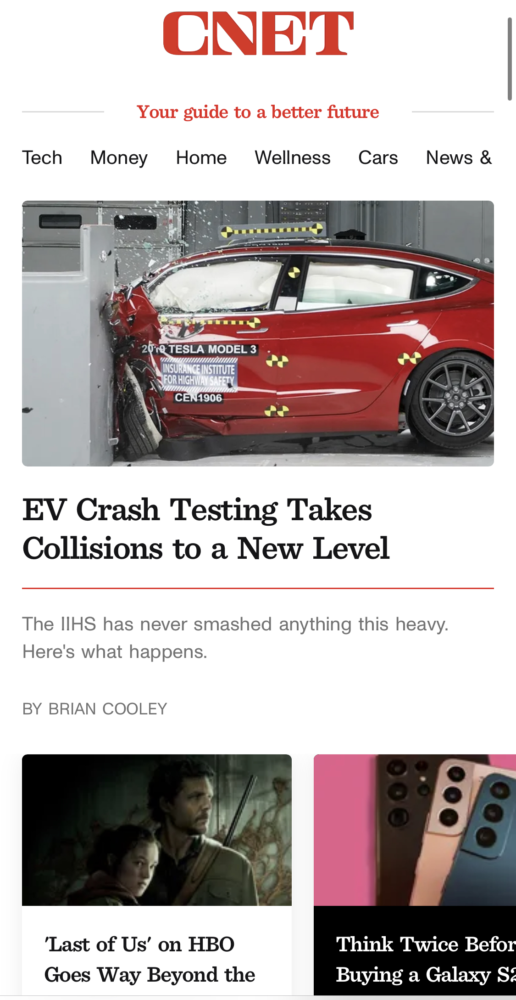

Visual Hierarchy
CNET
CNET.com "The visualization of hierarchies helps us define the design of the web page from the first glance we can see the poster of the largest page and while we go through the CNET page we can see how the other elements are reduced in size and with less information about this way defining the visual concept of hierarchy."
Hick's Law
Best Buy
BestBuy.com"Hick's law helps us understand that while the web page has more options when choosing by the user, the longer it will take them to make a decision, in general the group of options within the BestBuy page allows us to have a greater number of options at time to buy a product taking time to choose and managing to apply hick's law."
Rule of Thirds
Apple
Apple.com"The rule of thirds aims to place more important content on any page within the upper third as we see in the Apple page, you can not only appreciate the quality of images but also they are placed in a way that the user can easily interact."